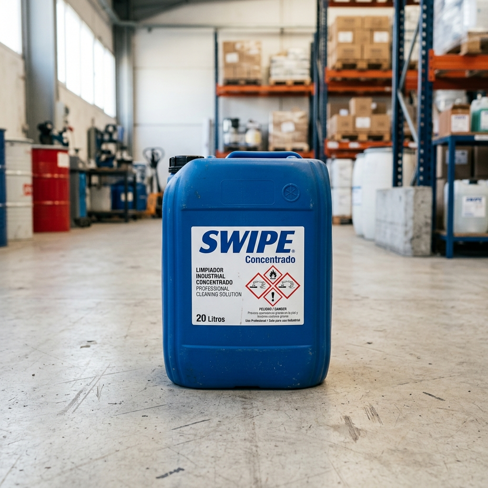

Una mezcla común en la limpieza puede resultar fatal en segundos.
Responsabilidades compartidas en el manejo seguro de sustancias químicas.
El Sistema Globalmente Armonizado (SGA) homologa la clasificación y etiquetado de productos químicos a nivel internacional. No importa el país o el idioma: los pictogramas y palabras clave son universales.
Indicadores visuales rápidos sobre el nivel de peligro de la sustancia.
Se utiliza para indicar las categorías de peligro más graves.
Ejemplo: SWIPE Concentrado (causa quemaduras graves en la piel y lesiones oculares).
Se utiliza para indicar las categorías de peligro menos graves.
Ejemplo: Sustancias con toxicidad aguda de menor grado o irritaciones leves.
Describen la naturaleza de los peligros de una sustancia química (físicos, a la salud o al medio ambiente) y, cuando corresponda, el grado de peligro.
Recomiendan medidas obligatorias para minimizar o prevenir los efectos adversos causados por la exposición o el almacenamiento incorrecto.
Las Hojas de Datos de Seguridad constan de 16 secciones. Para emergencias y uso diario, estas 4 son vitales.
Instrucciones de primeros auxilios inmediatos ante inhalación, ingestión, contacto con piel u ojos.
Medidas en caso de fuga o vertido accidental, contención y métodos de limpieza segura.
Precauciones para la manipulación segura y condiciones de almacenamiento seguro de la sustancia.
Límites de exposición permisibles y especificaciones de Equipo de Protección Personal requerido.

Escenario: Se suscita un derrame accidental de 10L de SWIPE Concentrado en el cuarto de máquinas.
Busca rápidamente en la Sección 6 de tu HDS e indica qué medidas de mitigación se deben tomar inmediatamente.
Nunca manipules una sustancia química si no está debidamente etiquetada y si no conoces su HDS. El desconocimiento es el primer paso hacia un accidente.
El EPP no evita el accidente, pero marca la diferencia entre un susto y una lesión permanente. Usa guantes, gafas y protección respiratoria cuando se indique.
Los productos químicos reaccionan. Mezclas incompatibles (como cloro con ácidos o amoníaco) liberan vapores letales. Mantén siempre las sustancias aisladas y en recipientes autorizados.